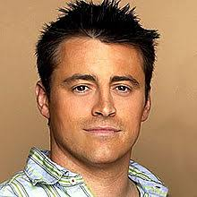
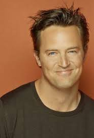
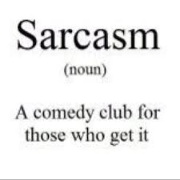
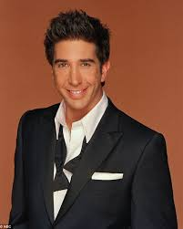
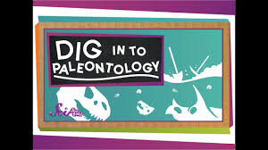
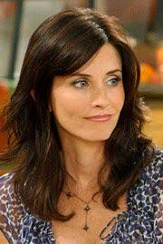

| Character |
Image |
Favourite scene |
Character information |
Speciality |
| Joey Tribbiani |
 |
Best of Joey
| Joey is portrayed as promiscuous and dim-witted but good-natured, as well as very loyal, caring, and protective of his friends. He is a food-loving womanizer who has had more luck with dates than any of the other group members. In contrast to his "ladies man" personality, he has also a marked childish side. |
|
| Chandler Bing |
 |
Best of Chandler
|
Personality. Though Chandler never lets up by using sarcasm as a defense, he has a tendency to come off as needy and makes bad first impressions as said by Phoebe with his constant joke-making and brash demeanor. Despite this emotional immaturity, Chandler is the most financially secure of his friends. |
 |
| Ross Geller |
 |
Best of Ross
|
While he is smart, polite, caring, thoughtful and kind, Ross is often clumsy and socially awkward - taking the characteristics of the stereotypical "loser nerd". He is sometimes shown to have a good sense of humor. He is the only member of the group of friends with a doctorate and, as such, can be arrogant. |
 |
| Phoebe Buffay |
|
Best of Phoebe |
Personality. Phoebe is a sweet-natured but odd guitar player. Having experienced nothing like a normal, complete childhood, Phoebe is often very dim-witted, sometimes smart and is in some regards still a child at heart. She believed Santa Claus existed, until Joey told her otherwise. |
|
| Monica Geller |
 |
Best of Monica
|
Energetic, hyper, and obsessive-compulsive. She's the “mother” of the group, and like some mothers, she can be overbearing and domineering. But she can also be the level-headed practical friend, helping others through their irrational moments. Monica is loyal and caring. |
|
| Rachel Green |
|
Best of Rachel |
According to Rachel's original character description, written by Crane and Kauffman themselves for the show's pilot, the character is a spoiled yet courageous young woman who "has worked for none of what she has", unlike best friend Monica, and is initially "equipped to do nothing". |
|